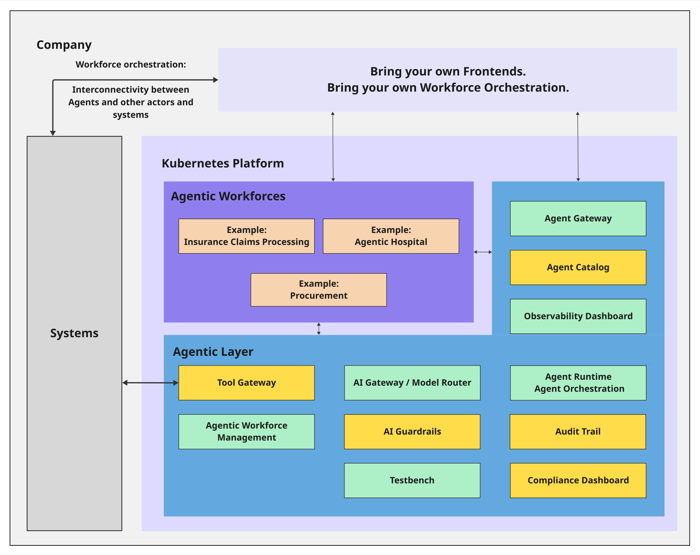

Introduction and Goals
Purpose and Scope
The Agentic Layer serves as a control plane for intelligent workloads, providing a suite of components that coordinate and orchestrate AI agents within enterprise environments. The system is architected as modular, reusable components built on a Kubernetes Platform foundation, enabling integration into existing enterprise infrastructure while maintaining operational sovereignty and compliance requirements.
The architecture is structured in multiple layers built on Kubernetes:
-
Kubernetes Platform: The foundational infrastructure layer providing container orchestration, scaling, and resource management
-
Agentic Layer: Core platform components including AI Gateway/Model Router, Agent Runtime Agent Orchestration, Tool Gateway, Agentic Workforce Management, AI Guardrails, Testbench, Audit Trail, and Compliance Dashboard
-
Agentic Workforces: Application-level agent implementations for specific use cases (e.g., Insurance Claims Processing, Healthcare Operations, Procurement)
-
Management Interface: Operational components including Agent Gateway, Agent Catalog, and Observability Dashboard for system administration

Implementation Status
In the architecture overview diagram above:
-
Green boxes represent existing components, implemented in an initial version
-
Yellow boxes represent planned components that are not yet implemented
This color coding provides visibility into the current development status and planned roadmap for the Agentic Layer platform.
Key Advantages
The Agentic Layer provides several architectural advantages for enterprise AI deployments:
Data Sovereignty and Infrastructure Control
Operational Independence and Regulatory Compliance
The system enables complete sovereignty over data, models, and infrastructure through support for both cloud and on-premise deployments. This design ensures sensitive data and AI processing remain within defined infrastructure boundaries while meeting data residency and regulatory requirements across multiple jurisdictions.
Orchestrated Workflow Integration
Enterprise-Scale Process Coordination
The architecture transforms isolated AI agent invocations into coordinated, enterprise-wide processes. The platform handles distribution, control, and monitoring of agent workforces, enabling complex AI workflow orchestration across organizational boundaries.
Technology Agnosticism and Open Standards
Vendor Independence and Architectural Flexibility
Built on open-source principles and agnostic design patterns, the system prevents vendor lock-in while providing transparency into system operations. The architecture supports free choice of cloud providers, AI models, and integration tools, ensuring adaptability to evolving technology landscapes.
Regulatory Compliance and Governance
Built-in Audit and Security Framework
The system incorporates comprehensive governance, transparency, and audit capabilities from the architectural foundation. Built-in compliance with regulations including EU AI Act and GDPR through comprehensive logging, security controls with integrated guardrails, and adherence to industry security standards.
Technical Features & Properties
The system architecture incorporates the following technical characteristics to support enterprise-grade AI operations:
Kubernetes-Native Deployment Flexibility
Cloud-Native Architecture with BYOC and On-Premise Support
Built as a Kubernetes-native platform, the architecture supports flexible deployment models including public cloud, private cloud, and on-premise environments. The Kubernetes foundation provides container orchestration, scaling, and resource management while enabling organizations to maintain infrastructure control and meet data residency and regulatory compliance requirements.
Centralized Governance Framework
Agent Catalog and Lifecycle Management
A comprehensive governance framework provides centralized agent catalog functionality for discovery, versioning, and lifecycle management. This enables organizational visibility and control across the entire agent ecosystem with standardized management interfaces.
Model Abstraction Layer
LLM Provider Independence
An agnostic model router abstracts differences between Large Language Model providers, providing intelligent routing and failover capabilities. This design enables seamless provider switching while maintaining consistent interfaces and operational behavior.
Observability and Audit Infrastructure
Comprehensive Monitoring and Compliance Logging
Built-in observability infrastructure provides comprehensive metrics collection, distributed tracing, and audit logging capabilities. This supports both operational monitoring requirements and regulatory compliance through complete audit trail maintenance.
Multi-Framework Runtime Support
Heterogeneous Agent Execution Environment
The runtime environment supports multiple agent frameworks and execution patterns within a unified operational model. This enables deployment of agents built with different frameworks while maintaining consistent operational characteristics and management interfaces.
Integrated Testing Framework
Agent Validation and Quality Assurance
A comprehensive testing framework provides agent validation, performance testing, and quality assurance capabilities. This ensures agent reliability and performance characteristics before production deployment through automated testing pipelines.
Requirements Overview
Agent Management and Orchestration
-
Agent Runtime / Agent Orchestration: Kubernetes-native execution of agents with automated scaling and resource management
-
Agent Catalog: Centralized discovery, versioning, and lifecycle management of agent instances
-
Agentic Workforce Management: Coordinate complex AI workflows across organizational boundaries
-
Agent Gateway: Handle routing and load distribution for concurrent agent requests
Model and Provider Integration
-
AI Gateway / Model Router: Unified interface with intelligent routing across multiple LLM providers
-
Tool Gateway: Seamless integration with external systems and AI service providers
-
Provider Agnostic Operations: Abstract differences between AI service providers while maintaining operational consistency
Governance and Compliance
-
Audit Trail: Generate complete audit trails for regulatory compliance and operational monitoring
-
AI Guardrails: Integrated content filtering, safety checks, and access management systems
-
Compliance Dashboard: Built-in monitoring for EU AI Act, GDPR, and industry-specific standards
-
Testbench: Agent validation, performance testing, and reliability verification capabilities
Deployment and Operations
-
Kubernetes-Native Deployment: Cloud-native support for BYOC, public cloud, private cloud, and on-premise environments
-
Observability Dashboard: Comprehensive metrics collection, distributed tracing, and operational monitoring
-
Dynamic Configuration: Environment-specific configuration management with Kubernetes-native runtime updates
-
Standards-Based Integration: Open standards and protocols for enterprise system interoperability